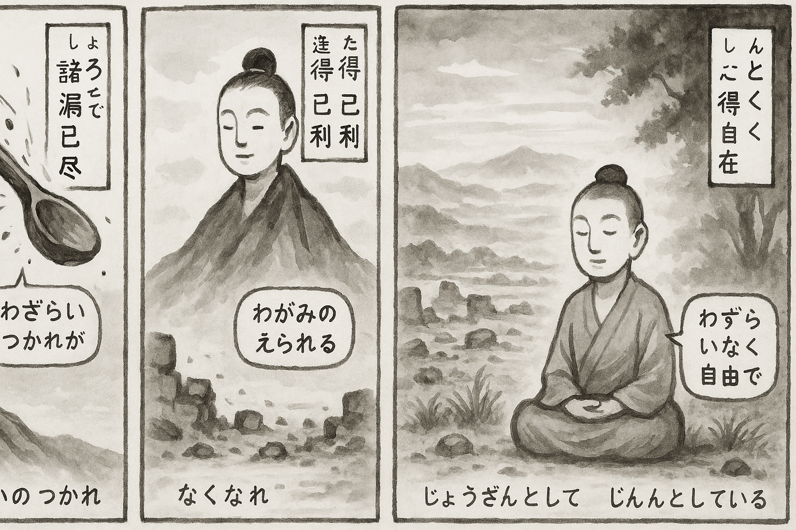

七十五巻 巻一覧
正法眼藏第36 阿羅漢
本ページの導入・語彙・深掘り・クイズは tools/regen_volume_intro_from_corpus.py が OpenAI API で生成したものです（入力は当巻冒頭原文の抜粋）。内容はモデル出力のため、重要箇所は必ず原文・教本と照合してください。
出典: https://shomonji.or.jp/zazen/doc/genzou.html
（ローカル生成の全文: 全文ページ）
この巻の位置（導入）
諸漏已盡、無復煩惱、逮得己利、盡諸有結、心得自在（諸漏已に盡き、復た煩惱無く、己利を逮得して、諸の有結を盡し、心自在を得たり）。これ大阿羅漢なり、學佛者の極果なり。
第四果となづく、佛阿羅漢あり。諸漏は沒柄破木杓なり。用來すでに多時なりといへども、已盡は木杓の渾身跳出なり。逮得己利は頂𩕳に出入するなり。盡諸有結は盡十方界不曾藏なり。
語彙の足場
- 阿羅漢：仏教において、煩悩を完全に断ち切り、悟りを得た者を指す。大阿羅漢はその最高の境地を表す。
- 諸漏：煩悩や執着を指し、これが尽きることで真の自由が得られる。
- 心得自在：心が自由であり、外的な影響を受けずに自らの道を歩むことを意味する。
- 涅槃：仏教における最終的な解脱の状態。煩悩から解放され、安らぎを得た境地。
- 辟支佛：自らの修行によって悟りを得た者で、他者を教化することは少ない。
本文（冒頭・抜粋）
出典はリポジトリ内 doc/正法眼蔵.txt です。原文の参照元: https://shomonji.or.jp/zazen/doc/genzou.html
諸漏已盡、無復煩惱、逮得己利、盡諸有結、心得自在（諸漏已に盡き、復た煩惱無く、己利を逮得して、諸の有結を盡し、心自在を得たり）。
これ大阿羅漢なり、學佛者の極果なり。第四果となづく、佛阿羅漢あり。
諸漏は沒柄破木杓なり。用來すでに多時なりといへども、已盡は木杓の渾身跳出なり。逮得己利は頂𩕳に出入するなり。盡諸有結は盡十方界不曾藏なり。心得自在の形段、これを高處自高平、低處自低平と參究す。このゆゑに、牆壁瓦礫あり。自在といふは、心也全機現なり。無復煩惱は未生煩惱なり、煩惱被煩惱礙をいふ。
阿羅漢の神通智慧、禪定説法、化道放光等、さらに外道天魔等の論にひとしかるべからず。見百佛世界等の論、かならず凡夫の見解に準ずべからず。將謂胡鬚赤、更有赤鬚胡の道理なり。入涅槃は、阿羅漢の入拳頭裡の行業なり。このゆゑに涅槃妙心なり、無廻避處なり。入鼻孔の阿羅漢を眞阿羅漢とす、いまだ鼻孔に出入せざるは、阿羅漢にあらず。
古云、我等今日、眞阿羅漢、以佛道聲、令一切聞（古く云く、我等今日、眞阿羅漢なり、佛道聲を以て、一切をして聞かしむ）。
いま令一切聞といふ宗旨は、令一切諸法佛聲なり。あにただ諸佛及弟子のみを擧拈せんや。有識有知、有皮有肉、有骨有髓のやから、みなきかしむるを、令一切といふ。有識有知といふは、國土草木、牆壁瓦礫なり。搖落盛衰、生死去來、みな聞著なり。以佛道聲、令一切聞の由來は、渾界を耳根と參學するのみにあらず。
釋迦牟尼佛言、若我弟子、自謂阿羅漢辟支佛者、不聞不知諸佛如來但教化菩薩事、此非佛弟子、非阿羅漢、非辟支佛（釋迦牟尼佛言く、若し我が弟子、自ら阿羅漢辟支佛なりと謂て、諸佛如來の但だ菩薩のみを教化したまふ事を知らず聞かずは、此れ佛弟子に非ず、阿羅漢に非ず、辟支佛に非ず）。
佛言の但教化菩薩事は、我及十方佛、乃能知是事なり。唯佛與佛、乃能究盡、諸法實相なり。阿耨多羅三藐三菩提なり。しかあれば、菩薩諸佛の自謂も、自謂阿羅漢辟支佛者に一齊なるべし。そのゆゑはいかん。自謂すなはち聞知諸佛如來、但教化菩薩事なり。
古云、聲聞經中、稱阿羅漢、名爲佛地（古に云く、聲聞經の中には、阿羅漢を稱じて、名づけて佛地となす）。
いまの道著、これ佛道の證明なり。論師胸臆の説のみにあらず、佛道の通軌あり。阿羅漢を稱じて佛地とする道理をも參學すべし。佛地を稱じて阿羅漢とする道理をも參學すべきなり。阿羅漢果のほかに、一塵一法の剩法あらず、いはんや三藐三菩提あらんや。阿耨多羅三藐三菩提のほかに、さらに一塵一法の剩法あらず。いはんや四向四果あらんや。阿羅漢擔來諸法の正當恁麼時、この諸法、まことに八兩にあらず、半斤にあらず。不是心、不是佛、不是物なり。佛眼也覰不見なり。八萬劫の前後を論ずべからず。抉出眼睛の力量を參學すべし。剩法は渾法剩なり。
釋迦牟尼佛言、是諸比丘比丘尼、自謂已得阿羅漢、是最後身、究竟涅槃、便不復志求阿耨多羅三藐三菩提。當知、此輩皆是増上慢人。所以者何、若有比丘、實得阿羅漢、若不信此法、無有是處（釋迦牟尼佛言く、是の諸の比丘比丘尼、自ら已に阿羅漢を得たり、是れ最後身なり、究竟涅槃なりと謂うて、便ち復た阿耨多羅三藐三菩提を志求せざらん。當に知るべし、此輩皆な是れ増上慢人なり。所以者何、若し比丘有つて、實に阿羅漢を得て、若し此の法を信ぜざらん、是の處有ること無けん）。
いはゆる阿耨多羅三藐三菩提を能信するを、阿羅漢と證す。必信此法は、附囑此法なり、單傳此法なり、修證此法なり。實得阿羅漢は、是最後身、究竟涅槃にあらず、阿耨多羅三藐三菩提を志求するがゆゑに。志求阿耨多羅三藐三菩提は、弄眼睛なり、壁面打坐なり、面壁開眼なり。徧界なりといへども、神出鬼沒なり。亙時なりといへども、互換投機なり。かくのごとくなるを、志求阿耨多羅三藐三菩提といふ。このゆゑに、志求阿羅漢なり。志求阿羅漢は、粥足飯足なり。
夾山圜悟禪師云、古人得旨之後、向深山茆茨石室、折脚鐺子煮飯喫十年二十年、大忘人世永謝塵寰。今時不敢望如此、但只韜名晦迹守本分、作箇骨律錐老衲、以自契所證、隨己力量受用。消遣舊業、融通宿習、或有餘力、推以及人、結般若緣、練磨自己脚跟純熟。正如荒草裡撥剔一箇半箇。同知有、共脱生死、轉益未來、以報佛祖深恩。抑不得已、霜露果熟、推將出世、應緣順適、開托人天、終不操心於有求。何況依倚貴勢、作流俗阿師、擧止欺凡罔聖、苟利圖名、作無間業。縱無機緣、只恁度世亦無業果、眞出塵羅漢耶（夾山圜悟禪師云く、古人得旨の後、深山茆茨石室に向いて、折脚の鐺子もて飯を煮ぎて喫ふこと十年二十年、大きに人の世を忘れ永く塵寰を謝す。今時敢て此の如くなるを望まず、但只名を韜み迹を晦まして本分を守り、箇の骨律錐の老衲と作つて、以て自ら所證に契ひ、己が力量に隨つて受用せん。舊業を消遣し、宿習を融通し、或し餘力有らば推して以て人に及ぼし、般若の緣を結び、自己の脚跟を練磨して純熟ならしめん。正に荒草裏に一箇半箇を撥剔するが如し。同じく有ることを知り、共に生死を脱し、轉た未來を益し、以て佛祖の深恩に報ぜん。抑已むことを得ず、霜露果熟して、推して將て出世し、緣に應じて順適し、人天を開托して、終に心を有求に操らず。何に況んや貴勢に依倚し、流俗の阿師と作つて、擧止凡を欺き聖を罔みし、利を苟り名に圖り、無間の業を作さんや。縱ひ機緣無からんにも、只だ恁く度世して亦た業果無き、眞の出塵の羅漢ならん）。
しかあればすなはち、而今本色の衲僧、これ眞出塵阿羅漢なり。阿羅漢の性相をしらんことは、かくのごとくしるべし。西天の論師等のことばを妄計することなかれ。東地の圜悟禪師は、正傳の嫡嗣ある佛祖なり。
洪州百丈山大智禪師云、眼耳鼻舌身意、各各不貪染一切有無諸法、是名受持四句偈、亦名四果（洪州百丈山大智禪師云く、眼耳鼻舌身意、各各一切有無諸法に貪染せず、是を受持四句偈と名づけ、亦た四果と名づく）。
而今の自他にかかはれざる眼耳鼻舌身意、その頭正尾正、はかりきはむべからず。このゆゑに、渾身おのれづから不貪染なり、渾一切有無諸法に不貪染なり。受持四句偈、おのれづからの渾渾を不貪染といふ、これをまた四果となづく。四果は阿羅漢なり。
しかあれば、而今現成の眼耳鼻舌身意、すなはち阿羅漢なり。構本宗末、おのづから透脱なるべし。始到牢關なるは受持四句偈なり、すなはち四果なり。透頂透底、全體現成、さらに絲毫の遺漏あらざるなり。畢竟じて道取せん、作麼生道。いはゆる、
羅漢在凡、諸法教他罣礙。羅漢在聖、諸法教他解脱。須知、羅漢與諸法同參也。既證阿羅漢、被阿羅漢礙也。所以空王以前老拳頭也（羅漢凡に在るや、諸法他をして罣礙せしむ。羅漢聖に在るや、諸法他をして解脱せしむ。須らく知るべし、羅漢と諸法と同參なり。既に阿羅漢を證すれば、阿羅漢に礙へらる。所以に空王以前の老拳頭なり）。
正法眼藏阿羅漢第三十六
爾時仁治三年壬寅夏五月十五日住于雍州宇治郡觀音導利興聖寶林寺示衆
建治元年六月十六日書寫之 懷弉
図解（4コマ・AI生成）
教義の根拠は本文・出典に従い、漫画は比喩の補助に留めてください。

深掘り（読解の手掛かり）
- 阿羅漢は煩悩を断ち切り、完全な自由を得る存在である。
- 阿羅漢の境地は、学仏者にとっての最終的な目標である。
- 涅槃は阿羅漢の果実であり、これを得ることで真の解脱が達成される。
確認（形成評価）
各設問の下の「採点」で正誤を表示します（ブラウザ内のみ。ログは送りません）。